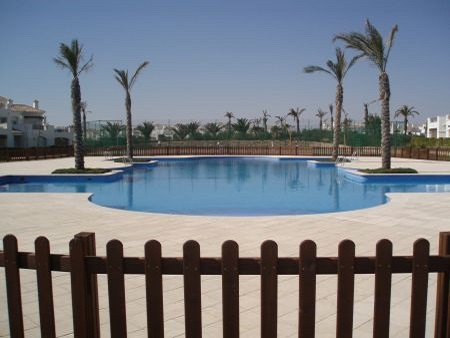
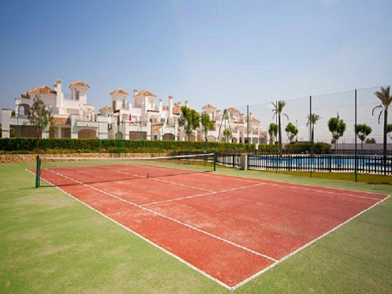
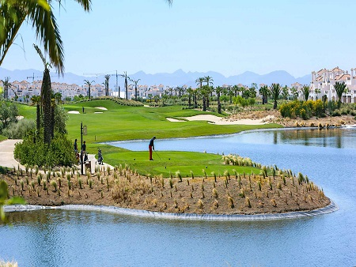
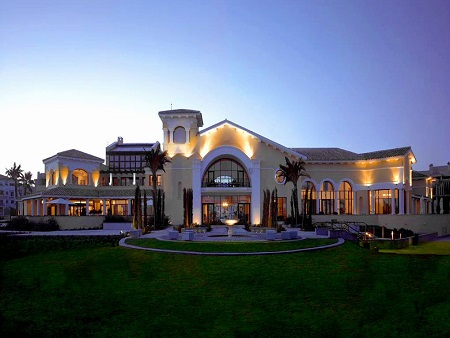

- La Torre Golf Resort is easily accessible from Murcia-San Javier and Alicante airports. It also has excellent access to the most central cities in the region - Murcia and Cartagena.
- The largest and busiest resort from Polaris World is situated just fifteen minutes away from the magnificent beaches and waters of the Mar Menor lagoon, the largest salt water lagoon in Europe.
- Services include a large supermarket, bank, hairdressing and beauty salon, healthcare centre, bars, restaurants, a travel agency offering excursions to the region's attractions and numerous communal swimming pools. There is also a superb Spa which offers a comprehensive range of Spa treatments and mineral baths.
- The resort has a fantastic 18 hole, par 69, golf course that runs through the entire complex. Its spectacular design includes large bunkers and huge lakes, making it a challenge to players of all levels. The lakes play an important role as the game progresses, requiring of the player great skill and composure.
- Any guest staying on a Polaris World Resort can use the facilities and services of all the Polaris World resorts, including the golf courses, bars and restaurants. Polaris World operate a shuttle service to take guests between the resorts.




{kind=link}
{kind=link}
{kind=link}
{kind=link}